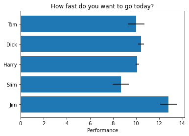

2+4*1042Generally, cells like this are what to type into your Python shell/notebook/colab:
These are bits of code you want to perhaps use many times, or keep self contained, or refer to at different points. They can take values as input and give values back (or not).
Note the indentation - Python forces your code to be nicely readable by using ‘whitespace’/indentation to signify what chunks of code are related. You will see this more later, but generally you should try and write readable code and follow style standards
Many functions have a header - formatted as a multiline comment with three ’’’. This hopefully will tell you about the function
Anyway, let’s run our function, now that we have initialised it!
Write a function to convert map scale. For example, on a 1:25,000 map (good for hiking!) the distance between two points is 15 cm. How far apart are these in real life? (3750 m).
[Reminder: 15 cm * 25000 = 375000 cm = 3750 m]
Your function should take as input two numbers: the distance on the map (in cm) and the second number of the scale and, i.e. calculate_distance(15, 25000) should return 375000
#First we have to load some modules to do the work for us.
#Modules are packages people have written so we do not have to re-invent everything!
#The first is NUMerical PYthon. A very popular matrix, math, array and data manipulation library.
import numpy as np
#This is a library for making figures (originally based off Matlab plotting routines)
#We use the alias 'plt' because we don't want to type out the whole name every time we reference it!
import matplotlib.pyplot as plt
# random code from matplotlib docs
# Fixing random state for reproducibility
np.random.seed(19680801)
plt.rcdefaults()
fig, ax = plt.subplots()
# Example data
people = ('Tom', 'Dick', 'Harry', 'Slim', 'Jim')
y_pos = np.arange(len(people))
performance = 3 + 10 * np.random.rand(len(people))
error = np.random.rand(len(people))
ax.barh(y_pos, performance, xerr=error, align='center')
ax.set_yticks(y_pos, labels=people)
ax.invert_yaxis() # labels read top-to-bottom
ax.set_xlabel('Performance')
ax.set_title('How fast do you want to go today?')
plt.show()
All materials copyright Sydney Informatics Hub, University of Sydney